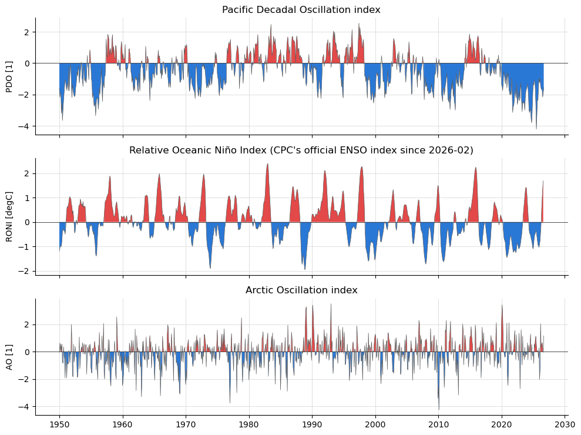
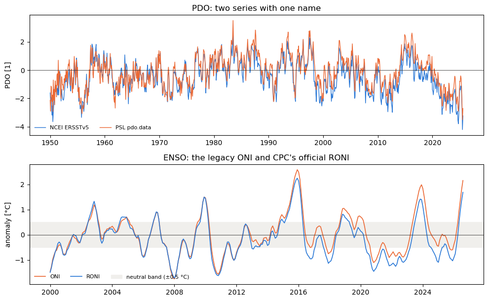
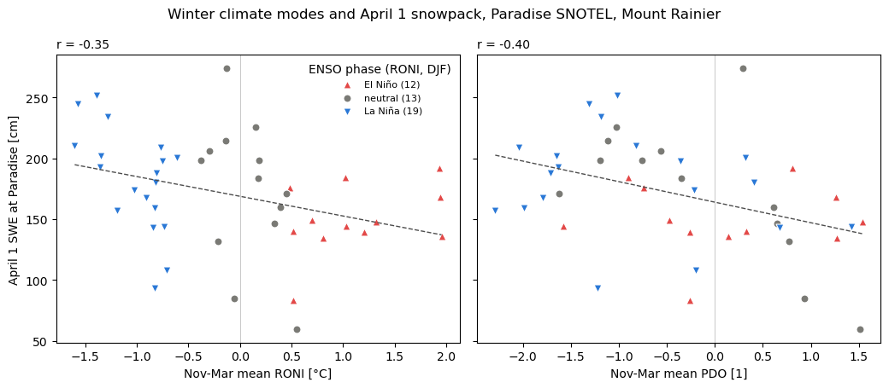
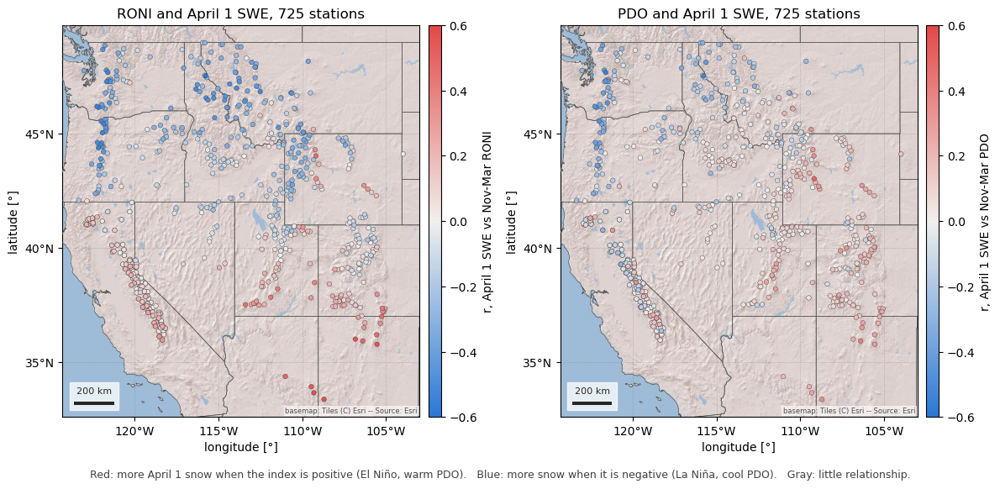
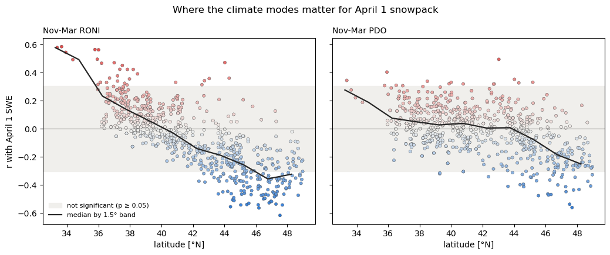

Note
Go to the end to download the full example code.
Climate-mode indices: PDO, ENSO, AO (NOAA NCEI / CPC / PSL)#
Climate-mode indices are monthly series, one number per month, that summarize a large-scale pattern: the Pacific Decadal Oscillation (PDO), the El Niño-Southern Oscillation (ENSO), the Arctic and North Atlantic Oscillations (AO, NAO), the Pacific/North American pattern (PNA) and the Atlantic Multidecadal Oscillation (AMO). They are the usual first explanation for why one winter’s snowpack is not like the next.
Three NOAA offices publish them:
CPC, the Climate Prediction Center, part of the National Weather Service, which issues ENSO advisories and keeps the operational ENSO, AO, NAO and PNA series;
NCEI, the National Centers for Environmental Information, NOAA’s data archive, which keeps the ERSSTv5 sea-surface-temperature record and the PDO and AMO computed from it;
PSL, the Physical Sciences Laboratory in Boulder, a research lab that maintains MEI.v2 and a widely used page of copies of many indices in one format (its “correlation page”).
The same name covers several different series, so source="noaa" (the
default) reads each index from the office that maintains it: the PDO and AMO
from NCEI, ENSO, AO, NAO and PNA from CPC, and MEI.v2 from PSL. For ENSO that
means RONI, the relative Oceanic Niño Index, which CPC made its official
index in February 2026; the legacy ONI is still published. source="psl"
reads PSL’s correlation-page copies, for reproducing older work. No account is
needed for either.
The first figure is the PDO, RONI and AO since 1950. The second shows why the source matters: two “PDO” series and the two ENSO indices, side by side. The third ties the indices to snow, with April 1 snow water equivalent at the Paradise SNOTEL station on Mount Rainier against each winter’s mean RONI and PDO. The last two widen that to every long-record SNOTEL and CDEC station in the western US, where ENSO’s influence flips sign between north and south.
import matplotlib.pyplot as plt
import numpy as np
import pandas as pd
from matplotlib.colors import LinearSegmentedColormap
import easysnowdata as esd
print(f"easysnowdata {esd.__version__}")
# Warm/cool poles for an index's sign, and a gray for neutral winters.
WARM, COOL, NEUTRAL = "#e34948", "#2a78d6", "#7a7a75"
# Two routes or two series compared on one axis: the first two categorical hues.
FIRST, SECOND = "#2a78d6", "#eb6834"
easysnowdata 0.3.3.dev80+g6c92c9517
Where the product comes from, and what each route asks for.
for src in esd.catalog.get("climate-indices").sources:
print(f"{src.id:6} {src.title:40} {', '.join(src.requires) or 'no account'}")
noaa NOAA CPC / NCEI / PSL text files no account
psl NOAA PSL correlation-page files no account
What the default route offers and which file each index comes from. Nothing
is downloaded until load.
print(esd.climate.indices.search()[["provider", "cadence", "url"]].to_string())
provider cadence url
index
pdo NOAA NCEI monthly https://www.ncei.noaa.gov/pub/data/cmb/ersst/v5/index/ersst.v5.pdo.dat
roni NOAA CPC 3-month season, stamped at the centre month https://www.cpc.ncep.noaa.gov/data/indices/RONI.ascii.txt
oni NOAA CPC 3-month season, stamped at the centre month https://www.cpc.ncep.noaa.gov/data/indices/oni.ascii.txt
nino34 NOAA CPC monthly https://www.cpc.ncep.noaa.gov/data/indices/detrend.nino34.ascii.txt
rnino34 NOAA CPC monthly https://www.cpc.ncep.noaa.gov/data/indices/Rnino34.ascii.txt
mei NOAA PSL 2-month season, stamped at the later month https://psl.noaa.gov/enso/mei/data/meiv2.data
ao NOAA CPC monthly https://www.cpc.ncep.noaa.gov/products/precip/CWlink/daily_ao_index/monthly.ao.index.b50.current.ascii
nao NOAA CPC monthly https://www.cpc.ncep.noaa.gov/products/precip/CWlink/pna/norm.nao.monthly.b5001.current.ascii
pna NOAA CPC monthly https://www.cpc.ncep.noaa.gov/products/precip/CWlink/pna/norm.pna.monthly.b5001.current.ascii
amo NOAA NCEI monthly https://www.ncei.noaa.gov/pub/data/cmb/ersst/v5/index/ersst.v5.amo.dat
Every index since 1950, as one monthly Dataset. A 3-month-season index
(RONI, ONI) is stamped at its centre month, so the value for January is the
December-February mean. Each variable’s latest attribute says where its
file ends; CPC’s ENSO files run a month behind the others.
idx_ds = esd.climate.indices.load(time="1950/..")
print(idx_ds)
print({name: idx_ds[name].attrs["latest"] for name in idx_ds.data_vars})
<xarray.Dataset> Size: 74kB
Dimensions: (time: 921)
Coordinates:
* time (time) datetime64[us] 7kB 1950-01-01 1950-02-01 ... 2026-09-01
Data variables:
pdo (time) float64 7kB -1.61 -2.17 -1.89 -1.99 ... -2.16 -1.89 -1.55
roni (time) float64 7kB -1.19 -1.08 -0.96 -1.0 ... 0.97 1.36 1.69 nan
oni (time) float64 7kB -1.32 -1.2 -1.12 -1.08 ... 1.39 1.8 2.16 nan
nino34 (time) float64 7kB -1.33 -1.46 -0.8 -1.09 ... 1.47 1.78 2.17 2.56
mei (time) float64 7kB nan nan nan nan nan ... 0.27 1.52 2.41 2.54 2.37
ao (time) float64 7kB -0.0603 0.6268 -0.0081 ... 0.3035 -0.056 1.156
nao (time) float64 7kB 0.92 0.4 -0.36 0.73 ... -0.3134 -1.916 0.5334
pna (time) float64 7kB -2.34 -1.04 0.24 0.01 ... 0.6149 -0.0797 -0.6415
amo (time) float64 7kB -0.03 -0.13 -0.16 -0.22 ... 0.68 0.95 1.19 1.25
Attributes:
source: noaa
source_id: noaa
source_title: NOAA CPC / NCEI / PSL text files
source_url: https://github.com/egagli/geospatial_data_and_visu...
product_id: climate-indices
title: Climate-mode indices: PDO, ENSO, AO, NAO, PNA, AMO...
data_citation: NOAA Climate Prediction Center (RONI, ONI, Niño 3....
license: public domain (U.S. Government work)
easysnowdata_version: 0.3.3.dev80+g6c92c9517
indices: pdo roni oni nino34 mei ao nao pna amo
{'pdo': '2026-09', 'roni': '2026-08', 'oni': '2026-08', 'nino34': '2026-09', 'mei': '2026-09', 'ao': '2026-09', 'nao': '2026-09', 'pna': '2026-09', 'amo': '2026-09'}
The PDO, RONI and AO since 1950, shaded warm above zero and cool below. The PDO’s long phases stand out (negative 1950-1976, positive 1977-1998, and mostly negative since), as do the big El Niños of 1982-83, 1997-98, 2015-16 and 2023-24.
fig, axes = plt.subplots(3, 1, figsize=(10, 7.5), sharex=True)
for ax, name in zip(axes, ["pdo", "roni", "ao"], strict=True):
series = idx_ds[name].to_series().dropna()
esd.plotting.timeseries(
idx_ds,
ax=ax,
variable=name,
legend=False,
title=idx_ds[name].attrs["long_name"],
color="0.35",
linewidth=0.5,
)
ax.fill_between(series.index, series, 0, where=series > 0, color=WARM, lw=0)
ax.fill_between(series.index, series, 0, where=series < 0, color=COOL, lw=0)
ax.axhline(0, color="0.2", linewidth=0.6)
ax.set_xlabel("")
ax.set_ylabel(f"{name.upper()} [{idx_ds[name].attrs['units']}]")
fig.tight_layout()

Two routes to “the PDO”. PSL’s pdo.data is a different series from
NCEI’s, built a different way, and it stopped at 2025-08 (load logs a
warning when a file has gone stale). The two agree on the phases but not on
the month: they correlate at about 0.9 and can differ by more than one unit.
psl_ds = esd.climate.indices.load(time="1950/..", indices="pdo", source="psl")
both_df = pd.DataFrame(
{
"NCEI ERSSTv5": idx_ds["pdo"].to_series(),
"PSL pdo.data": psl_ds["pdo"].to_series(),
}
).dropna()
difference = both_df["NCEI ERSSTv5"] - both_df["PSL pdo.data"]
print(f"r = {both_df.corr().iloc[0, 1]:.2f} over {len(both_df)} months")
print(
f"largest monthly difference {difference.abs().max():.2f} ({difference.abs().idxmax():%Y-%m})"
)
print("PSL file ends", psl_ds["pdo"].attrs["latest"])
pdo from source 'psl' ends 2025-08 and is no longer updated; source='noaa' has a current series.
r = 0.92 over 908 months
largest monthly difference 2.28 (1950-08)
PSL file ends 2025-08
Two ENSO indices from the same office. The ONI measures Niño 3.4 against a fixed climatology, so a warming ocean pushes it up; RONI subtracts the tropical-mean anomaly first. They now disagree by about half a degree, and they can disagree about the phase itself: a winter that is “El Niño” by one can be neutral by the other. Classify winters from the index you name, and say which.
recent = slice("2000-01-01", None)
fig, axes = plt.subplots(2, 1, figsize=(10, 6.2), sharex=False)
axes[0].plot(
both_df.index, both_df["NCEI ERSSTv5"], color=FIRST, lw=1, label="NCEI ERSSTv5"
)
axes[0].plot(
both_df.index, both_df["PSL pdo.data"], color=SECOND, lw=1, label="PSL pdo.data"
)
axes[0].set_title("PDO: two series with one name")
axes[0].set_ylabel("PDO [1]")
for name, color in (("oni", SECOND), ("roni", FIRST)):
series = idx_ds[name].sel(time=recent).to_series().dropna()
axes[1].plot(series.index, series, color=color, lw=1.2, label=name.upper())
axes[1].axhspan(-0.5, 0.5, color="#f0efec", zorder=0, label="neutral band (±0.5 °C)")
axes[1].set_title("ENSO: the legacy ONI and CPC's official RONI")
axes[1].set_ylabel("anomaly [°C]")
for ax in axes:
ax.axhline(0, color="0.2", linewidth=0.6)
ax.legend(loc="lower left", fontsize=8, frameon=False, ncol=3)
fig.tight_layout()
oni_phase = esd.climate.indices.enso_phase(idx_ds["oni"])
roni_phase = esd.climate.indices.enso_phase(idx_ds["roni"])
phases_df = pd.DataFrame({"ONI": oni_phase, "RONI": roni_phase}).dropna()
winters_df = phases_df[phases_df.index.month == 1]
disagree_df = winters_df[winters_df["ONI"] != winters_df["RONI"]]
print(
f"{len(disagree_df)} of {len(winters_df)} DJF seasons since 1950 get a different phase:"
)
print(disagree_df.set_axis(disagree_df.index.year).to_string())

12 of 77 DJF seasons since 1950 get a different phase:
ONI RONI
time
1951 La Niña neutral
1954 neutral El Niño
1965 La Niña neutral
1972 La Niña neutral
1975 La Niña neutral
1988 El Niño neutral
1993 neutral El Niño
2015 El Niño neutral
2017 neutral La Niña
2020 El Niño neutral
2025 neutral La Niña
2026 neutral La Niña
Now the snow. seasonal_mean averages each index over November-March and
labels the result by water year, so a winter is one row. enso_phase
labels each winter by RONI with CPC’s rule (five overlapping seasons beyond
±0.5 °C), read at DJF.
The SWE comes from the daily station archive
(easysnowdata.stations.archive) rather than from the networks’ own
APIs: one request covers every station in the western US, and the build does
not depend on the NRCS server answering. The stations kept are the AWDB
(SNOTEL) and CDEC sites whose daily record starts by water year 1996, so each
can have 30 winters; the Paradise SNOTEL station on Mount Rainier
(679_WA_SNTL) is one of them.
winter_df = esd.climate.indices.seasonal_mean(idx_ds[["roni", "pdo", "pna", "ao"]])
djf_phase = roni_phase[roni_phase.index.month == 1]
djf_phase.index = djf_phase.index.year
WUS = (-125.0, 31.0, -102.0, 49.0) # the western US, (W, S, E, N)
wus_gdf = esd.stations.archive.inventory(
WUS, networks=["awdb", "cdec"], daily_only=True
)
wus_gdf = wus_gdf[wus_gdf["earliest_record_date"] <= "1995-10-01"]
wus_ds = esd.stations.archive.load(
wus_gdf, variables="swe", time="1980-10-01/2026-06-30"
)
is_april1 = (wus_ds["time"].dt.month == 4) & (wus_ds["time"].dt.day == 1)
april1_df = wus_ds["swe"].sel(time=is_april1).to_pandas().T # water year x station
april1_df.index = april1_df.index.year
print(
f"{april1_df.shape[1]} stations, water years {april1_df.index.min()}-{april1_df.index.max()}"
)
april1 = april1_df["679_WA_SNTL"].dropna()
snow_df = winter_df.join(april1.rename("swe_cm"), how="inner").join(
djf_phase.rename("phase")
)
print(
f"Paradise: {len(snow_df)} water years, {snow_df.index.min()}-{snow_df.index.max()}"
)
792 stations, water years 1981-2026
Paradise: 44 water years, 1981-2026
April 1 SWE against the winter’s mean RONI and PDO. Both lean the same way: cool winters (La Niña, negative PDO) leave more snow at Paradise. What is not obvious is that the PDO’s correlation is as strong as ENSO’s, and so is the PNA’s, so “it was an El Niño year” is only part of the story. One station and 44 winters is a small sample: the correlations are about -0.4, real but loose, and the spread within each phase is wide.
styles = {
"El Niño": dict(color=WARM, marker="^"),
"neutral": dict(color=NEUTRAL, marker="o"),
"La Niña": dict(color=COOL, marker="v"),
}
fig, axes = plt.subplots(1, 2, figsize=(10.5, 4.6), sharey=True)
for ax, name, xlabel in (
(axes[0], "roni", "Nov-Mar mean RONI [°C]"),
(axes[1], "pdo", "Nov-Mar mean PDO [1]"),
):
for phase, style in styles.items():
rows = snow_df[snow_df["phase"] == phase]
ax.scatter(
rows[name],
rows["swe_cm"],
s=42,
edgecolor="white",
linewidth=0.8,
label=f"{phase} ({len(rows)})",
**style,
)
slope, intercept = np.polyfit(snow_df[name], snow_df["swe_cm"], 1)
xs = np.linspace(snow_df[name].min(), snow_df[name].max(), 2)
ax.plot(xs, intercept + slope * xs, color="0.3", lw=1, ls="--")
r = snow_df[[name, "swe_cm"]].corr().iloc[0, 1]
ax.set_title(f"r = {r:.2f}", loc="left", fontsize=10)
ax.axvline(0, color="0.75", lw=0.6)
ax.set_xlabel(xlabel)
axes[0].set_ylabel("April 1 SWE at Paradise [cm]")
axes[0].legend(title="ENSO phase (RONI, DJF)", fontsize=8, frameon=False)
fig.suptitle(
"Winter climate modes and April 1 snowpack, Paradise SNOTEL, Mount Rainier"
)
fig.tight_layout()

The numbers behind the figure: each index’s correlation with April 1 SWE, and the mean April 1 SWE by ENSO phase.
print(
snow_df.drop(columns="phase").corr()["swe_cm"].drop("swe_cm").round(2).to_string()
)
print(snow_df.groupby("phase")["swe_cm"].agg(["mean", "count"]).round(1).to_string())
roni -0.35
pdo -0.40
pna -0.39
ao 0.30
mean count
phase
El Niño 149.7 12
La Niña 182.0 19
neutral 173.5 13
One station is one point on a much larger pattern. The same correlation for every long-record station in the western US, keeping stations with at least 30 April 1 values and a median April 1 SWE of 5 cm or more (below that, a zero most years says more about melt timing than about the winter).
enough = (april1_df.notna().sum() >= 30) & (april1_df.median() >= 5)
april1_df = april1_df.loc[:, enough]
winters_wus_df = winter_df.reindex(april1_df.index)
r_gdf = wus_gdf.loc[april1_df.columns, ["name", "network", "latitude", "geometry"]]
for name in ("roni", "pdo", "pna", "ao"):
r_gdf[f"r_{name}"] = april1_df.corrwith(winters_wus_df[name])
# With about 45 winters, |r| above 0.29 is significant at the 5% level.
n_winters = int(april1_df.notna().sum().median())
r_crit = 1.96 / np.sqrt(n_winters - 3)
print(
f"{len(r_gdf)} stations, median {n_winters} winters, |r| > {r_crit:.2f} at p < 0.05"
)
725 stations, median 45 winters, |r| > 0.30 at p < 0.05
How to read the colours. Each dot is one station, coloured by the correlation (r) between its April 1 SWE and the winter’s mean index.
Red (r > 0): April 1 SWE rises with the index. For RONI that means El Niño winters leave more snow and La Niña winters less; for the PDO, the positive (warm) phase leaves more.
Blue (r < 0): April 1 SWE falls as the index rises, so La Niña winters (or the negative, cool PDO) leave more snow and El Niño winters less.
Gray (r near 0): the index says little about that station’s snowpack.
The deeper the colour, the stronger the relationship; at ±0.6, about a third of the year-to-year variance in April 1 SWE goes with the index (r² ≈ 0.36). Red and blue match the warm and cool poles of the indices in the first figure.
The RONI map is the classic ENSO dipole. The Pacific Northwest and the northern Rockies are blue: La Niña winters are snowier there. Arizona, New Mexico and the southern Sierra Nevada are red: El Niño winters are snowier. Between them, from northern California across Nevada and Utah to Colorado, the stations are gray, and a seasonal outlook based on ENSO says little. The PDO map has the same shape with its pivot further north, so most of the Sierra Nevada and the central Rockies sit near zero.
r_cmap = LinearSegmentedColormap.from_list("r", [COOL, "#f0efec", WARM])
states_gdf = esd.boundaries.admin.states(WUS)
fig, axes = plt.subplots(1, 2, figsize=(12, 6.4))
for ax, name in zip(axes, ["roni", "pdo"], strict=True):
esd.plotting.points(
r_gdf.sort_values(f"r_{name}", key=abs), # strongest on top
ax=ax,
column=f"r_{name}",
legend_label=f"r, April 1 SWE vs Nov-Mar {name.upper()}",
cmap=r_cmap,
vmin=-0.6,
vmax=0.6,
markersize=16,
edgecolor="0.25",
linewidth=0.3,
title=f"{name.upper()} and April 1 SWE, {len(r_gdf)} stations",
)
esd.plotting.add_outline(ax, states_gdf, edgecolor="0.35", linewidth=0.5)
fig.tight_layout()
fig.text(
0.5,
0.04,
"Red: more April 1 snow when the index is positive (El Niño, warm PDO). "
"Blue: more snow when it is negative (La Niña, cool PDO). "
"Gray: little relationship.",
ha="center",
fontsize=9,
color="0.25",
)

Text(0.5, 0.04, 'Red: more April 1 snow when the index is positive (El Niño, warm PDO). Blue: more snow when it is negative (La Niña, cool PDO). Gray: little relationship.')
The same correlations against latitude, which is most of the story: the median crosses zero near 40-41°N for RONI and near 43°N for the PDO, so the stations above the zero line (red, El Niño-snowy) are almost all in the south and those below it (blue, La Niña-snowy) in the north. Points outside the gray band are significant one station at a time; the stations are not independent, so the band says which ones are worth a look rather than how many “found” an effect.
bins = np.arange(31, 50, 1.5)
fig, axes = plt.subplots(1, 2, figsize=(10.5, 4.4), sharey=True)
for ax, name in zip(axes, ["roni", "pdo"], strict=True):
column = r_gdf[f"r_{name}"]
ax.axhspan(
-r_crit, r_crit, color="#f0efec", zorder=0, label="not significant (p ≥ 0.05)"
)
ax.scatter(
r_gdf["latitude"],
column,
c=column,
cmap=r_cmap,
vmin=-0.6,
vmax=0.6,
s=14,
edgecolor="0.25",
linewidth=0.3,
)
by_band = column.groupby(pd.cut(r_gdf["latitude"], bins)).median()
centres = [interval.mid for interval in by_band.index]
ax.plot(centres, by_band.values, color="0.15", lw=1.6, label="median by 1.5° band")
ax.axhline(0, color="0.2", linewidth=0.6)
ax.set_xlabel("latitude [°N]")
ax.set_title(f"Nov-Mar {name.upper()}", loc="left", fontsize=10)
axes[0].set_ylabel("r with April 1 SWE")
axes[0].legend(loc="lower left", fontsize=8, frameon=False)
fig.suptitle("Where the climate modes matter for April 1 snowpack")
fig.tight_layout()

The numbers, by latitude band: the median correlation with each index and the number of stations. The PNA tracks ENSO in the north (it is the atmospheric bridge between the two), and the AO says little anywhere.
bands = pd.cut(r_gdf["latitude"], [31, 36, 39, 42, 45, 49])
summary_df = r_gdf.groupby(bands, observed=True)[
["r_roni", "r_pdo", "r_pna", "r_ao"]
].median()
summary_df["stations"] = r_gdf.groupby(bands, observed=True).size()
print(summary_df.round(2).to_string())
r_roni r_pdo r_pna r_ao stations
latitude
(31, 36] 0.52 0.25 0.21 -0.13 8
(36, 39] 0.13 0.04 0.01 -0.07 189
(39, 42] 0.00 0.04 -0.02 -0.04 211
(42, 45] -0.18 -0.00 -0.16 0.06 163
(45, 49] -0.33 -0.17 -0.33 0.13 154
Total running time of the script: (0 minutes 6.041 seconds)